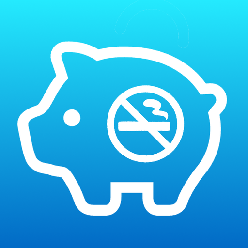

禁煙積立バンクNoSmokingBank
たばこ代を貯金と投資で見える化Quit smoking, grow savings
禁煙で浮いたたばこ代を毎日積み立て、もし投資に回していたらいくらになっていたかを同じグラフで確かめられます。値上げにも対応し、マイルストーンには通知でお知らせします。 Bank the cigarette money you no longer spend, every single day, and see what it would be worth if you had invested it instead, right on the same chart.